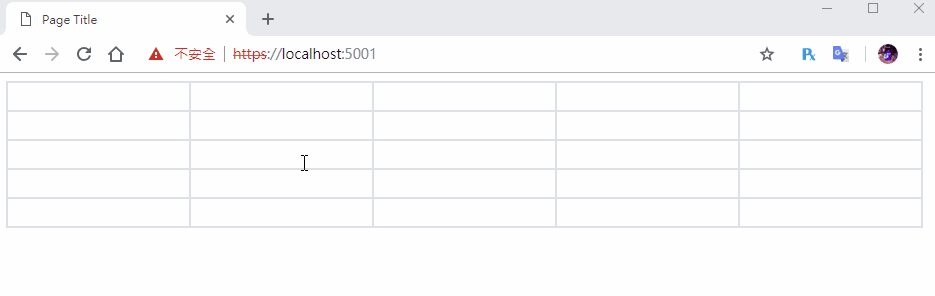
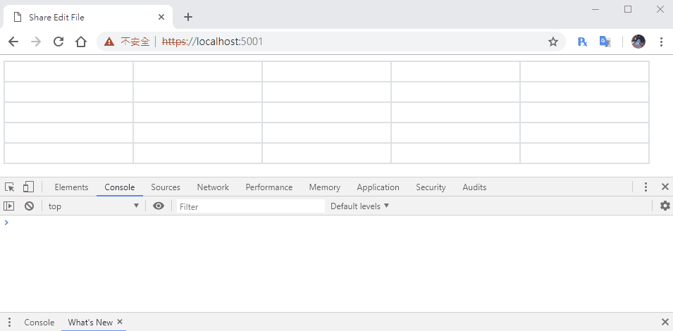

[鐵人賽Day21] 實作Web即時共同編輯文件 (1) - 建立文件編輯介面
文章目錄
有沒有覺得第一次看到Google共用編輯文件很好玩，它把類似Excel功能搬到Web上，然後又能共同編輯，我們這次就是要來模仿做一個類似GOOGLE文件共同編輯的功能。
頁面的建立
我們要先建立一個可編輯的table，其實只要建立一個table元素然後裡面塞input元素就行，但是這樣會很醜長的一點都不像excel表格，所以我們要先來制定一下樣式
制定CSS樣式
首先先把input的框線和背景色去掉，背景色改成透明，然後選擇時的顏色我們改成橘色，height則是為了吃滿整個表格，outline-offset是為了讓選擇的框不會吃到空間。
input {
background: transparent;
border: 0;
height: 100%;
padding: 5px;
}
input:focus {
outline-offset: 0px;
outline-color: rgb(240, 142, 15);
outline-width: 3px;
outline-style: solid;
}
再來修改table樣式，border-collapse改成collapse可以讓表格線和table外框繪製在一起，tr和th框線統一成灰色，高為20px。
table {
border-collapse: collapse;
}
th, td {
border: 2px solid #dee2e6;
height: 20px;
}
建立表格
表格我們要使用JS動態建立的方式，先建立一個空的table元素，
<table id="table">
</table>
再建立rowCount和cellCount2個變數來設定行和列，使用document.create()來建立元素，createCell用來建立cell，createTable用來建立row。
var rowCount = 5;
var cellCount = 5;
var table = document.getElementById('table');
function createCell() {
var input = document.createElement('input');
input.type = 'text';
return input;
}
function createTable() {
for (var i = 0; i < cellCount; i++) {
var row = document.createElement('tr');
for (var j = 0; j < rowCount; j++) {
var cell = document.createElement('td');
cell.appendChild(createCell());
row.appendChild(cell);
}
table.append(row)
}
}
createTable();
完成後得到的結果 
編輯事件
這邊我們要先做最基本的編輯處理，再我們沒編輯的Cell時，我們應該要把它給鎖上，為什麼要這樣做呢？因為再多人編輯時，你不應該同時讓超過1個人共同編輯同一Cell，因為這樣會非常混亂，所以我們要建立2個事件，一個是編輯時解鎖，一個是未編輯時鎖上，上鎖的方式原本我是用disable來達成，但是發現有些瀏覽器會造成無法觸發click事件，所以改用readonly是更好的選擇。
// 未編輯鎖上Cell
function cellLock() {
this.readOnly = true;
}
// 編輯時解鎖Cell
function cellEdit() {
this.childNodes[0].readOnly = false;
// 焦點移至input
this.childNodes[0].focus();
}
註：這邊的
this應該有人不知道是什麼，如果直接執行的話this會是window，但是我們塞在td和input裡，所以會變成td和input的DOM
我們要把用監聽2個事件，一個是onblur焦點離開元素時，一個是onclick焦點移動到元素上時，有點要特別注意的地方是onclick必須寫再td元素上，不然事件不會被觸發，所以上面的CellEdit才會往裡面的元素找，使用childNodes的方式，所以我們得修改一下建立的方式createTable和createCell。
function createTable() {
for (var i = 0; i < cellCount; i++) {
var row = document.createElement('tr');
for (var j = 0; j < rowCount; j++) {
var cell = document.createElement('td');
cell.addEventListener('click', cellEdit,true);
cell.appendChild(createCell());
row.appendChild(cell);
}
table.append(row)
}
}
function createCell() {
var input = document.createElement('input');
input.addEventListener('blur', cellLock);
input.type = 'text';
input.readOnly = true;
return input;
}
完成結果 
註：原本鎖定的方式我是用Disable，後來發現Firefox和Edge只能點擊表格框觸發，大概瀏覽器解釋方法不一樣，所以我們還是以Chrome為主，雖然可以改用DIV的方式，但是難度大增，所以還是先用table吧！
今天就先做到這樣吧！